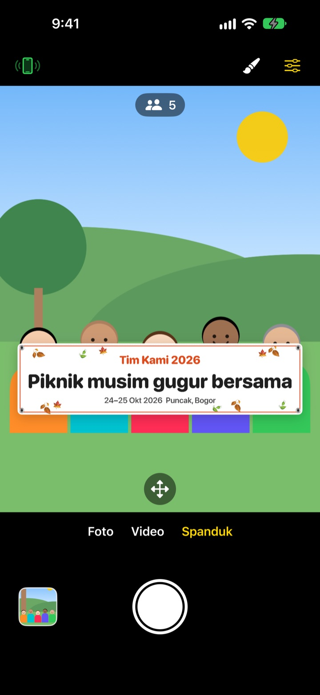
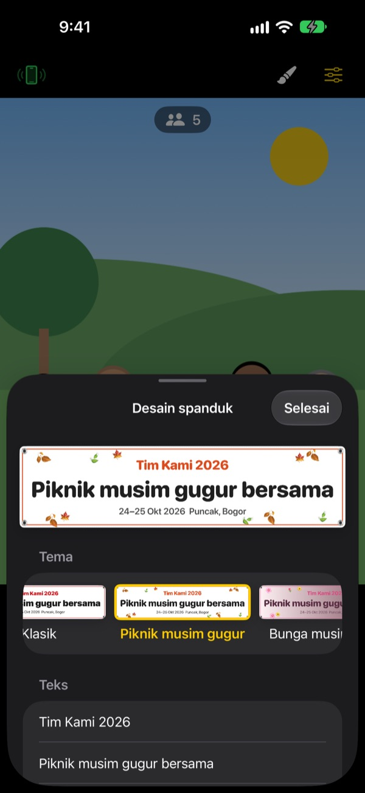

Foto bareng pegang spanduk,
tanpa cetak spanduk
Tulis teksnya, pilih tema, dan spanduk langsung muncul di depan rombongan. iPhone teman jadi remote cukup dengan sekali pindai QR, jadi yang memotret pun ikut masuk foto.
Semua fitur gratis. Memerlukan iOS 17 atau versi lebih baru.

Coba buat spanduk
Ubah teksnya lalu ketuk salah satu tema. Tekan tombol rana, dan seperti di app, hitungan mundur 3 detik berjalan sebelum memotret.
Pesan spanduk cuma demi satu foto?
Pesan spanduk demi satu foto piknik, dibawa ke lokasi, lalu bingung mau disimpan di mana. Tidak ada yang bisa memotret, jadi selalu ada satu orang yang tidak ikut masuk foto. ShutterLink memunculkan spanduk di layar kamera dan mengubah iPhone teman jadi remote, supaya semua orang bisa masuk foto sambil pegang spanduk.
Spanduk yang pas untuk acaramu dalam semenit
Pilih dari 13 tema, seperti piknik musim gugur, bunga musim semi, pesta akhir tahun, ulang tahun, hari olahraga, wisuda, pernikahan, dan lokakarya perusahaan, lalu tulis sendiri hingga tiga baris teks.
Ganti latar, huruf, hiasan, warna, dan rasio, serta tambahkan logo. Pilih bahan kain, vinil, atau kertas. Spanduk kain akan melengkung, berkerut, dan berkibar tertiup angin seperti aslinya.

Remote tanpa instal, cukup pindai QR
Ketuk tombol remote di kiri atas, dan kode QR akan muncul. Teman tinggal memindainya dengan app Kamera bawaan, lalu ShutterLink Remote langsung terbuka sebagai App Clip dan tersambung.
Tampilan langsung di remote ikut menampilkan spanduk, jadi atur bingkai lalu tekan rana. Setiap foto langsung terkirim ke iPhone yang jadi remote, jadi teman tanpa app pun bisa menyimpan dan membagikannya saat itu juga.
Mulai dalam tiga langkah
- 1
Pasang iPhone
Buka ShutterLink dan letakkan iPhone di tripod atau rak.
- 2
Taruh spanduk
Pilih Spanduk di bawah, atur teks dan tema dengan tombol kuas, lalu ketuk lantai tempat rombongan akan berdiri.
- 3
Angkat telapak tangan
Angkat telapak tangan atau tekan rana di remote. Timer menghitung mundur lalu memotret.
Fitur untuk foto bareng
- Gestur telapak tangan · rana tepuk tangan
- Angkat telapak tangan terbuka ke arah kamera atau tepuk tangan keras sekali untuk memulai timer
- Rana senyum
- Memotret sendiri saat semua orang tersenyum dengan mata terbuka
- Timer 3 · 5 · 10 · 20 · 30 detik
- Ada suara hitungan mundur, lampu kilat berkedip seirama, dan remote bergetar di tangan
- Minta semua orang melihat ke kamera
- Ketuk, dan iPhone yang memotret akan bersuara memanggil semua orang agar melihat ke lensa
- Foto beruntun 3 · 5
- Memilihkan foto terbaik saat semua orang bermata terbuka. Bisa diganti dengan foto lain di galeri
- Jumlah orang · tepi · waterpas
- Menghitung orang dalam bingkai, memberi tahu bila ada yang di tepi, dan menampilkan waterpas saat ponsel miring
- Interval 3 detik sampai 1 menit
- Abadikan matahari terbenam atau proses pengerjaan secara berkala
- Kontrol kamera
- Ketuk untuk fokus dan eksposur, kompensasi eksposur, lampu kilat, kisi, zoom 0,5x hingga 10x tergantung model, kamera depan dan belakang, video
- Mode sederhana
- Remote hanya menampilkan satu tombol rana besar yang bisa ditekan siapa saja
- Tombol volume · Kontrol Kamera
- Potret langsung dari iPhone yang memotret, tanpa remote
Di mode Spanduk, lampu kilat, foto beruntun, zoom, dan kamera depan tidak bisa dipakai. Timer, rana telapak tangan, dan remote tetap berfungsi.
Semua fitur gratis
Gratis
- Mode Spanduk dengan 13 tema
- Remote tanpa instal (App Clip)
- Rana telapak tangan, tepuk tangan, senyum, dan timer
- Foto terbaik, hitung orang, waterpas
- Video dan foto interval
Beri tip (opsional)
- Kirim tip kecil, sedang, atau besar dari Pengaturan
- Tip tidak membuka atau mengunci fitur apa pun
Bukan langganan. Kamu hanya membayar sekali saat memberi tip.
Tanpa iklan dan tanpa akun.
Pertanyaan umum
Apa saja yang dibutuhkan?
Instal ShutterLink di iPhone yang dipakai memotret (iOS 17 atau lebih baru). iPhone yang jadi remote tidak perlu menginstal apa pun, hanya perlu internet saat pertama kali membuka App Clip. Nyalakan Bluetooth di keduanya dan letakkan berdekatan, biasanya dalam jarak 10 m.
Sudah pindai QR, tapi App Clip tidak terbuka.
Pastikan iPhone yang jadi remote terhubung ke internet. Kamu juga bisa memasukkan kode 4 digit dari iPhone yang memotret di layar ShutterLink Remote lalu ketuk Hubungkan. Periksa juga bahwa App Clip tidak diblokir di Pengaturan › Durasi Layar › Pembatasan Konten & Privasi.
Tertahan di "Mencari kamera…".
ShutterLink harus terbuka di layar iPhone yang memotret. Pastikan Bluetooth menyala di Pengaturan › Bluetooth pada kedua iPhone. Kode berubah setiap kali app dibuka, jadi kalau kamu membukanya lagi, pakai QR atau kode yang baru lalu ketuk Coba lagi.
Muncul "Izin Bluetooth ditolak".
Aktifkan ShutterLink di Pengaturan › Privasi & Keamanan › Bluetooth. Remote berupa App Clip sehingga mungkin tidak ada di daftar. Kalau begitu, pindai QR lagi dan ketuk Izinkan saat diminta.
Tampilan langsung tersendat atau buram.
Tampilan langsung sengaja diperkecil agar bisa dikirim lewat Bluetooth. Foto dan video asli tetap tersimpan dengan kualitas penuh iPhone yang memotret. Dinding, orang, atau jarak jauh bisa membuatnya tersendat, tetapi rana dan kontrol lain tetap berfungsi.
Di mana foto yang sudah diambil?
Di app Foto pada iPhone yang memotret dan di galeri dalam app. Remote juga menerima salinan, tetapi tidak menyimpannya sendiri, jadi simpan atau bagikan sebelum menutup remote. Kalau tidak ada di Foto, izinkan ShutterLink di Pengaturan › Privasi & Keamanan › Foto.
Video tidak ada suaranya.
Aktifkan ShutterLink di Pengaturan › Privasi & Keamanan › Mikrofon.
Bisa sambungkan beberapa remote?
Bisa. Beberapa iPhone dapat tersambung bersamaan dengan QR atau kode yang sama, dan dari remote mana pun, yang memotret tetap kamera yang sama.
Sambungan putus saat memotret.
ShutterLink menjaga layar tetap menyala selama app terbuka. Mengunci ponsel dengan tombol samping atau pindah ke app lain akan memutus sambungan, jadi biarkan app tetap tampil di layar selama memotret.
Apakah foto saya diunggah ke mana-mana?
Tidak. Kedua iPhone tersambung langsung lewat Bluetooth, dan foto serta video hanya ada di iPhone yang memotret dan remote yang tersambung. Bisa dipakai di gunung atau pantai tanpa sinyal, dan tidak perlu akun.
Masih belum beres atau menemukan bug? Kirim email ke leeo@kakao.com. Sertakan model dan versi iOS kedua iPhone supaya bisa dicek lebih cepat.